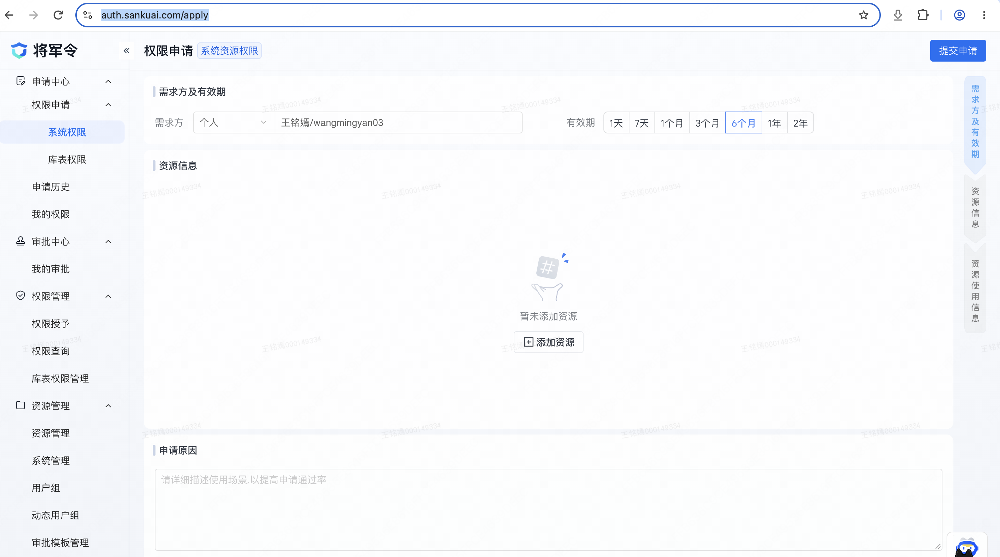
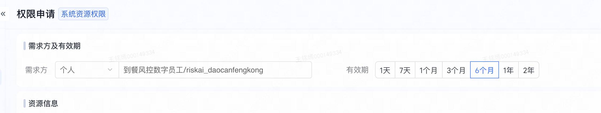
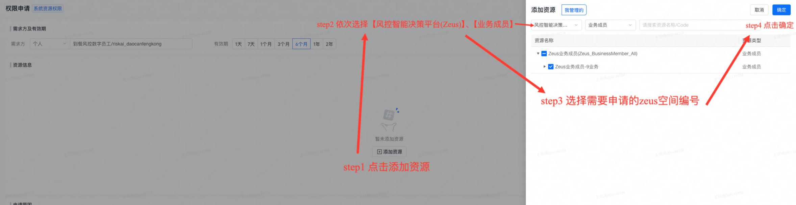
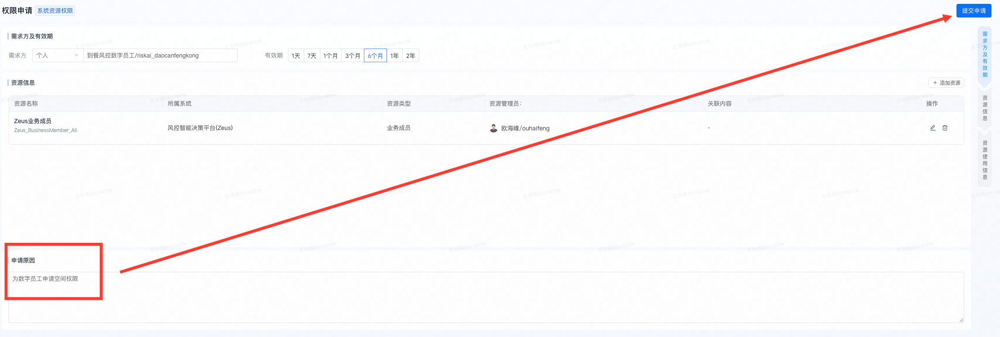
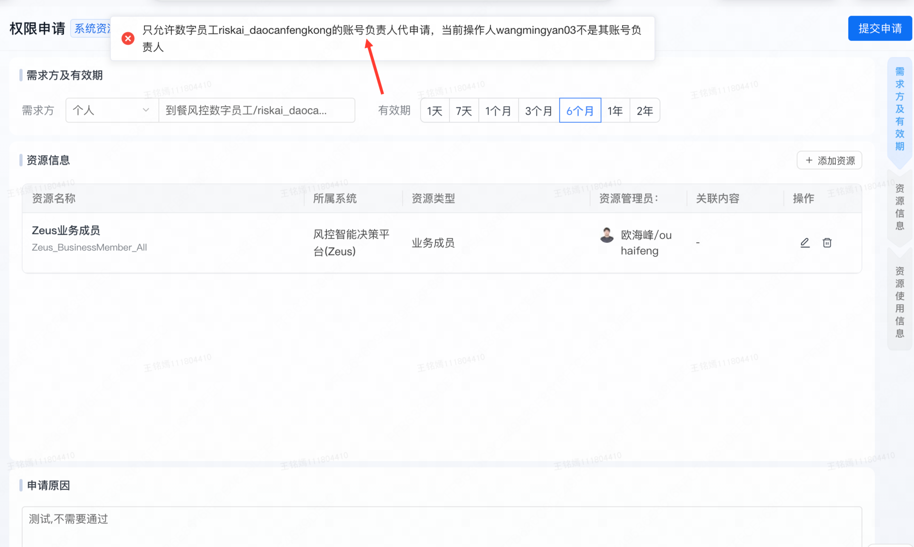

操作指南：为数字员工申请zeus空间权限
一、背景
随着业务智能化进程的不断推进，各团队陆续引入数字员工（如虚拟助手、自动化流程机器人等智能辅助应用）以提升运营效率。此类数字员工需以独立身份访问和使用 Zeus 智能决策平台执行相应操作。
为保障平台资源访问的安全性与合规性，数字员工在使用前须完成相应业务空间的权限申请。由于数字员工不具备独立操作能力，需由其实际账号负责人代为发起权限申请，经zeus空间管理员审核通过后方可获得对应空间的访问权限。
二、虚拟账号负责人操作链路
-
Step1 打开https://auth.sankuai.com/apply，进入权限申请页面

-
Step2 需求方选择【个人】，填写虚拟员工的MISID，选择权限有效期

-
Step3 在资源信息模块点击【添加资源】，在上方查询框中依次选择【风控智能决策平台(Zeus)】、【业务成员】，选择需要申请的zeus空间编号（不确定要申请哪个zeus空间，可以询问风控策略BP），选择完成后点击确定

-
Step4 填写【申请原因】后，点击【提交申请】，等待空间管理员审批通过即可

⚠️注意！仅数字员工的账号负责人可以代申请
